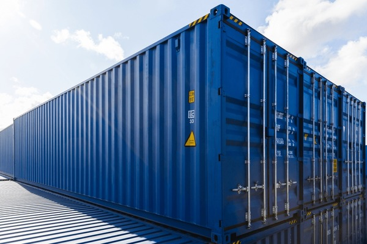

Ship Repair & Refit
Repair yards, refit teams, dockside works, hull, machinery, electrical, coating, and project coordination.
Your Gateway to Korean Marine Excellence.
We bridge global marine demand with Korea’s proven ship repair, refit, fabrication, and marine equipment capability.
Brokerage · Coordination · Quality Follow-up
FUSMO is not just a website or directory. We act as a practical human interface between clients, Korean yards, equipment makers, subcontractors, inspectors, and logistics partners.
Our value is field communication, vendor matching, document control, schedule follow-up, and problem-solving until the work moves forward.

What We Connect
Repair yards, refit teams, dockside works, hull, machinery, electrical, coating, and project coordination.
Small vessel builds, aluminum/steel/FRP structures, marine fabrication, and custom production support.
Supplier discovery, quotation support, technical communication, export coordination, and logistics follow-up.
QA/QC coordination, photos, progress reports, technical paperwork, and client-side communication.
How It Works
Contact
Share your vessel type, project scope, location, target schedule, and required documents. FUSMO will help connect the right Korean marine capability.
mail2jinlee@gmail.com